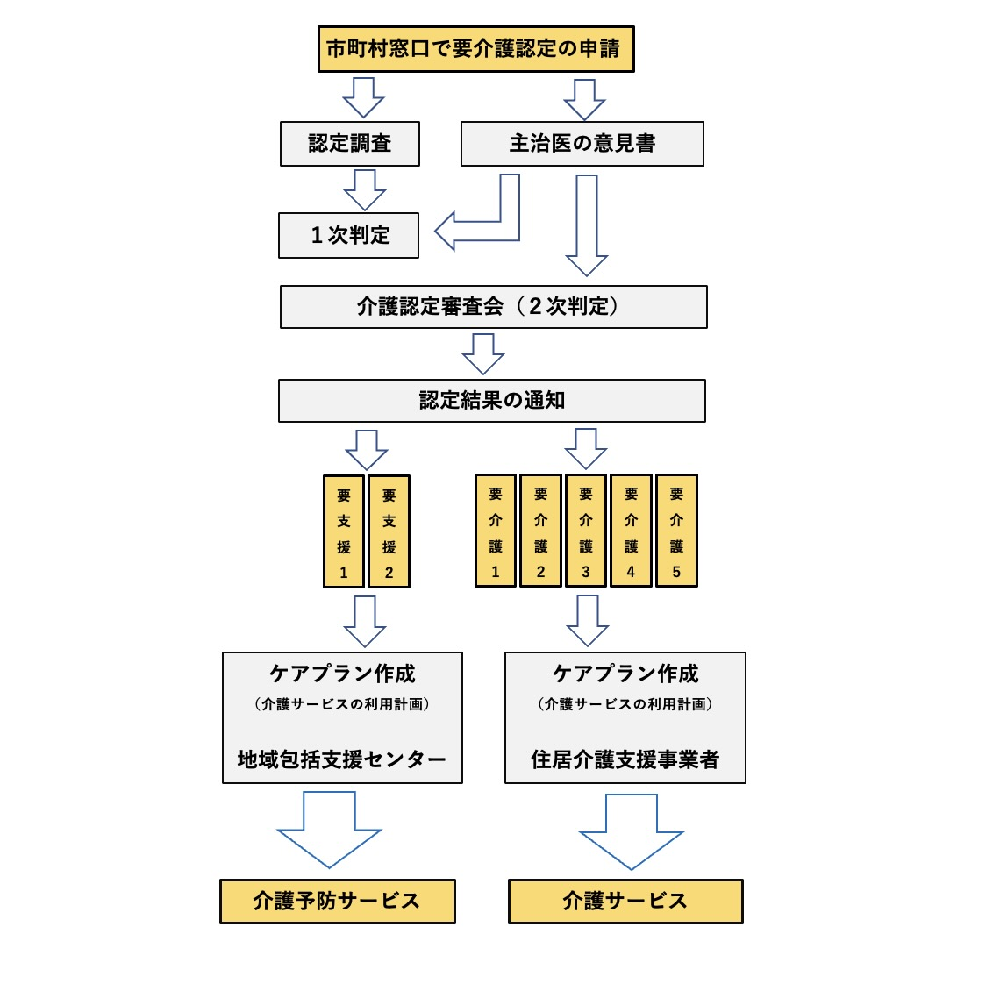
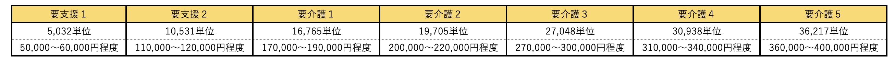

プロジェクト進捗状況１（2021.５.１）
前回更新時に今後の予定として、インタビューを考えていたが介護現場では感染拡大を防ぐために、面会・訪問を基本的に禁止しているため、未だインタビューができていない状況である。
そこで、プロジェクトを進行する上で、介護サービスの仕組みについても理解しておく必要がある為学ぶこととした。
◉介護サービスを利用するためには？

介護サービスを受けるためには上図の手続きを行い、認定結果が出てから初めてサービスを受けることができる。
私の祖父の場合は要介護２を認定され、日中の介護を行なっているデイサービスや福祉施設に短期間入所し日常生活上の世話や機能訓練を行うショートステイのサービスを利用した。
日中の介護は、比較的楽な方であったが問題は夜間のトイレであった。持病もあり頻繁にトイレに行くが誰かに介助されないといけない状況下であったので、家族内で交代で夜中に付き添いを行なっていた。
家族間だけでは介護ができなくなった為、介護施設の申請を行なっていたがどの施設も入居者でいっぱいで、空きを待たなければいけない状況であり、入居が決まったのは介護認定を受けてから、約３ヶ月ほど経ってからだった。
介護保険サービス利用限度額（横浜市）

在宅サービス(訪問介護・福祉用具貸与等)１ヶ月あたりの利用限度額が要介護度に設けられている。
実際の費用は、「単位数×横浜市の地域区分単価(10円〜11.12円)」によって算定される。
限度額を超えてしまった場合には個人負担となってしまうので注意が必要である。
定期的に訪問介護などを行うので金額面では変動は少ないが、初期費用として福祉用具(手すり・ベッド)などを新調しなければいけない為、限度額を超えた金額がかかってしまった。
◉今後の予定
昨日の報告会でインタビュー形式について対面にこだわるのではなくZOOMを用いた非対面の形式もありではないかと指摘を受けたので、ご迷惑がかからないように調整を行い実行したい。
3Dスキャンについての学習